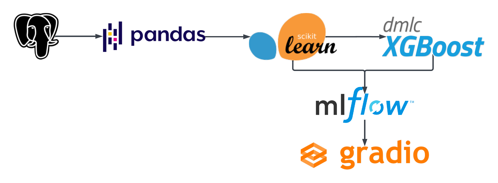

Prefect is an open-source workflow orchestration tool that helps you automate and manage the flow of work across your data stack.
MLOps
Prefect
Author
Sagar Thacker
Published
June 5, 2023
Prefect is an open-source workflow orchestration tool that helps you automate and manage the flow of work across your data stack.
Prefect is built on Python and uses a modular architecture that makes it easy to build and deploy complex workflows. Prefect also includes a rich set of features for monitoring, debugging, and managing your workflows.
Before we dive into Prefect, let’s first understand what is workflow orchestration, why do we need it, and where does Prefect come into play.
What is Workflow Orchestration?
Building a ML system has a lot of moving parts. We have to deal with data collection, data preprocessing, model training, model serving, etc. Each of these steps can be further broken down into sub-steps. For example, data preprocessing can be broken down into feature engineering, feature selection, etc.
Workflow Orchestration is the process of automating and managing the flow of work across these steps. It helps us build complex workflows by combining multiple steps together. It also helps us manage the dependencies between these steps.

Negative Engineering
Inspite of building a robust system, there are chances that something might go wrong. For example, the data might not be available, the model might fail to train, etc.
Often time while developing any application, we find ourselves spending a lot of time fixing bugs and making sure that everything works as expected. We spend time writing code to handle edge cases and make sure that our application is robust enough to handle any unexpected situation. Exmaples of such situations are:
Writing Retries logic when APIs go down
Build Notifications for when a job fails
Record logs for observability and debugging
Write conditional logic to handle edge cases
Handle cases when requests timeouts or fails
Negative Engineering refers to ideology that we spend most of our time writing code to handle edge cases rather than writing code that actually solves the problem. This is where Workflow Orchestration comes into play.
Worflow Orchestration tools provide set of features off the shelf that aim to eliminate the need for negative engineering. These tools provide features like retries, notifications, logging, lineage tracking, etc. out of the box.
Prefect
Prefect aims to eliminate the need for negative engineering by providing a rich set of features out of the box.
Setup
It is a good practice to create a virtual environment for each project. This helps us keep our dependencies separate and avoid any version conflicts.
Let’s create a virtual environment named venv and install all the dependencies.
# Create a virtual environmentconda create -p venv python=3.10 -y# Activate the virtual environmentconda activate venv/# Install all the dependenciespip install -r requirements.txt --no-cache-dir
Prefect Flow
We will be using the NYC Taxi Dataset for this tutorial. The dataset contains information about green taxi trips in New York City. The dataset is available in parquet format.
Steps that we’ll cover:
We’ll download the dataset from the NY Taxi website and load it into a pandas dataframe.
Preprocess the data.
Train a model on the preprocessed data.
Log the model and the metrics to MLflow.
You’ll wonder where do we use Prefect in this? Answer is in each step.
We’ll go through each step in detail. At the end you’ll find the complete code for the workflow.
Two most important building blocks in Prefect are Task and Flow. We’ll start by importing these two. More on these later.
from prefect import task, flow
Download the dataset
We have created a python function named fetch what will download the data from the NY Taxi website and save it to the data directory.
@task(name="Fetch Data", log_prints=True, retries=3, cache_key_fn=task_input_hash, cache_expiration=timedelta(days=1))def fetch(year: int, month: int, color: str) ->None:"""Fetches data from the NYC Taxi dataset and saves it locally"""# Download the data from the NYC Taxi dataset url =f"https://d37ci6vzurychx.cloudfront.net/trip-data/{color}_tripdata_{year}-{month:0>2}.parquet" file_name =f"{color}_tripdata_{year}-{month:0>2}.parquet" pathlib.Path("data").mkdir(exist_ok=True) os.system(f"wget {url} -O ./data/{file_name}")
Let’s understand what is happening here.
The function is defined in the same way as any other python function. The only difference is that we have added a decorator @task to the function. This decorator converts the python function into a Prefect Task. The decorator takes a few arguments:
@task is a decorator that converts a python function into a Prefect Task.
name is the name of the task. This is used to identify the task in the Prefect UI.
log_prints is a boolean flag that tells Prefect to log the output of the task.
retries is the number of times the task should be retried in case of failure.
cache_key_fn is a function that returns a unique key for the task. This is used to cache the output of the task.
cache_expiration is the time after which the cache should expire.
Terminology Alert: Task
A task is a unit of work that needs to be done. It can be anything from downloading a file to training a model. Prefect provides a decorator @task that converts a python function into a Prefect Task.
Imagine you are preparing a sandwich. To prepare a delicious sandwich you need to perform a few tasks like: get the bread, apply butter, add cheese, cut down the veggies, etc. Each of these tasks is a unit of work that needs to be done to prepare the sandwich. In Prefect, each of these tasks can be represented as a Prefect Task.
Note
To enable caching we specified a cache_key_fn which is a function that returns a cache key on our task. We cachec our task based on its input by using task_input_hash which is a function that returns a unique hash for the input of the task.
It hashes all inputs to the task and returns a unique hash. If the task inputs do not change, the hash will remain the same and the cachec results are used instead of running the task again until cache expires.
We also specified a cache_expiration of 1 day. This means that the cache will expire after 1 day.
This is a good practice while working with large datasets. It helps us avoid downloading the same dataset again and again.
Next up, we have function named read_data that takes a filename and load the data into a pandas dataframe.
This function is also decorated with @task decorator. Nothing new here.
Preprocess the data
Now that we have the data, we need to preprocess it before we can train a model on it. We’ll create a function named add_features that combines PULocationID and DOLocationID. Also, we’ll represent our features using the DictVectorizer. We’ll perform these steps for both training and validation data.
Again, we’ll decorate the function with @task decorator.
We have an XGBoost model that we want to train. We’ll create a function named train_best_model that takes the training and validation data along with the DictVectorizer and trains the model. We’ll use the best hyperparameters that we found seperately.
One awesome thing you’ll observe is that we are also using mlflow to log the model and the hyperparameters. This is a great way to track the model performance and the hyperparameters that were used to train the model.
Due to the log_prints flag, Prefect will log the output of the task including the output logs from mlflow. This is a great way to visualize the logs in the Prefect UI.
Now, we have our indenpendent tasks ready. Let’s create a flow that will run these tasks in the order we want.
Create a flow
We’ll create a flow named main_flow that will run the tasks in the order we want. We’ll also set the name of the flow to “Main Flow”. This is a great way to identify the flow in the Prefect UI.
Observe that yet again the flow is simply a function decorated with @flow decorator. We’ll also set the params argument to the flow. These paramarater also get recorded in the Prefect UI which can be very useful to track the flow runs.
Terminology Alert: Flow
A flow is a collection of tasks that are executed in a particular order. A flow is a function decorated with @flow decorator. The flow function can take arguments and return values.
Imagine flow is a container that holds all the tasks and the order in which they are executed. Making a delicious sandwich is a flow and the actions you take to make the sandwich are the tasks.
@flow(name="Main Flow")def main_flow(params):"""Main flow of the program"""# MLflow settings mlflow.set_tracking_uri("sqlite:///mlflow.db") mlflow.set_experiment("nyc-taxi-experiment")# Download and read data df_train, df_val = download_and_read(params.years, params.months, params.color)# Transform X_train, X_val, y_train, y_val, dv = add_features(df_train, df_val)# Train train_best_model(X_train, X_val, y_train, y_val, dv)
If you observe closely, you’ll notice that we have a download_and_read function but we didn’t define that anywhere to avoid confusion until now. We’ll define that function next but that function will be a Subflow in our main flow.
Create a subflow
Image a subflow as a flow within a flow. A subflow is a function decorated with the same @flow decorator but it is called from within another flow. A subflow can also take arguments and return values.
We’ll create a subflow named download_and_read that will call the previously defined functions (tasks) to download the data and read it into a pandas dataframe. We’ll also set the name of the subflow to “Download and Read”. This is a great way to identify the subflow in the Prefect UI.
@flow(name="Subflow - Download and Read Data", log_prints=True)def download_and_read(years: list, months: list, color: str):# Download the data from the NYC Taxi datasetfor year in years:for month in months:print(f"Download: Year-Month: {year}-{month} ({color})") fetch(year, month, color)# Read the data into a DataFrame track_data =[[], []] df_train = pd.DataFrame()for month in months[:-1]:print(f"Read: Year-Month: {year}-{month:0>2} ({color})") df = read_data(f"./data/{color}_tripdata_{year}-{month:0>2}.parquet") df_train = pd.concat([df_train, df], ignore_index=True) track_data[0].append(month)print(f"Read: Year-Month: {year}-{months[-1]:0>2} ({color})") df_val = read_data(f"./data/{color}_tripdata_{year}-{months[-1]:0>2}.parquet") track_data[1].append(months[-1])print(f"Training data consists of months: {track_data[0]}")print(f"Validation data consists of months: {track_data[1]}")return df_train, df_val
Terminology Alert: Subflow
A subflow is a flow within a flow. A subflow is a function decorated with @flow decorator. The subflow function can take arguments and return values.
Imagine you want to make a spicy sauce to have with your sandwich. To make a sauce you need to follow a recipe with multiple steps. Consider this as a subflow within the flow of making a sandwich.
Run the flow
We’ll run the script by calling the main_flow with the necessary arguments.
if__name__=="__main__": parser = argparse.ArgumentParser(description='Ingest CSV data to Postgres') parser.add_argument("--years", nargs="+", required=True, help="Data from year") parser.add_argument("--months", nargs="+", required=True, help="Data from months") parser.add_argument("--color", required=True, help="Taxi color", default="green") args = parser.parse_args() main_flow(args)
Example, to run the flow for the months of January, February and March of 2021 for green taxis, we’ll run the following command:
python orchestration.py --years 2021 --months 1 2 3 --color green
Illustration of the flow of execution of the tasks in the flow.
This will run the flow and log all the tasks in the Prefect UI.
Below you’ll find some screenshots of the Prefect UI, sample output on terminal, and MLflow UI.
Sample output on terminal:
Prefect UI:
You can start the Prefect server using the command prefect server start and then navigate to http://127.0.0.1:4200 to view the Prefect UI.
You’ll find both the main flow and the subflow on the page as it records all the flows that are run. You can click on the flow to view the details of the flow. Main flow:
Subflow:
Lastly you’ll find your experiment in the MLflow UI:
Run the mlflow UI using the command mlflow server --backend-store-uri sqlite:///mlflow.db --host 0.0.0.0 --port 8080 and then navigate to http://127.0.0.1:8080 to view the MLflow UI. Note: MLflow runs on port 5000 by default but we are running it on port 8080.
Congratulations on running your first Prefect flow! 🎉
You can find the whole code below:
orchestration.py
import osimport pickleimport pathlibimport scipyimport mlflowimport sklearnimport argparseimport pandas as pdimport numpy as npimport xgboost as xgbfrom sklearn.feature_extraction import DictVectorizerfrom sklearn.metrics import mean_squared_errorfrom prefect import flow, taskfrom prefect.tasks import task_input_hashfrom datetime import timedelta@task(name="Fetch Data", log_prints=True, retries=3, cache_key_fn=task_input_hash, cache_expiration=timedelta(days=1))def fetch(year: int, month: int, color: str) ->None:"""Fetches data from the NYC Taxi dataset and saves it locally"""# Download the data from the NYC Taxi dataset url =f"https://d37ci6vzurychx.cloudfront.net/trip-data/{color}_tripdata_{year}-{month:0>2}.parquet" file_name =f"{color}_tripdata_{year}-{month:0>2}.parquet" pathlib.Path("data").mkdir(exist_ok=True) os.system(f"wget {url} -O ./data/{file_name}")@task(name="Read a Parquet file")def read_data(filename: str) -> pd.DataFrame:"""Read data into DataFrame""" df = pd.read_parquet(filename) df.lpep_dropoff_datetime = pd.to_datetime(df.lpep_dropoff_datetime) df.lpep_pickup_datetime = pd.to_datetime(df.lpep_pickup_datetime) df["duration"] = df.lpep_dropoff_datetime - df.lpep_pickup_datetime df.duration = df.duration.apply(lambda td: td.total_seconds() /60) df = df[(df.duration >=1) & (df.duration <=60)] categorical = ["PULocationID", "DOLocationID"] df[categorical] = df[categorical].astype(str)return df@task(name="Add Features")def add_features(df_train: pd.DataFrame, df_val: pd.DataFrame) ->tuple([ scipy.sparse._csr.csr_matrix, scipy.sparse._csr.csr_matrix, np.ndarray, np.ndarray, sklearn.feature_extraction.DictVectorizer, ]):"""Add features to the model""" df_train["PU_DO"] = df_train["PULocationID"] +"_"+ df_train["DOLocationID"] df_val["PU_DO"] = df_val["PULocationID"] +"_"+ df_val["DOLocationID"] categorical = ["PU_DO"] #'PULocationID', 'DOLocationID'] numerical = ["trip_distance"] dv = DictVectorizer() train_dicts = df_train[categorical + numerical].to_dict(orient="records") X_train = dv.fit_transform(train_dicts) val_dicts = df_val[categorical + numerical].to_dict(orient="records") X_val = dv.transform(val_dicts) y_train = df_train["duration"].values y_val = df_val["duration"].valuesreturn X_train, X_val, y_train, y_val, dv@flow(name="Subflow - Download and Read Data", log_prints=True)def download_and_read(years: list, months: list, color: str):# Download the data from the NYC Taxi datasetfor year in years:for month in months:print(f"Download: Year-Month: {year}-{month} ({color})") fetch(year, month, color)# Read the data into a DataFrame track_data =[[], []] df_train = pd.DataFrame()for month in months[:-1]:print(f"Read: Year-Month: {year}-{month:0>2} ({color})") df = read_data(f"./data/{color}_tripdata_{year}-{month:0>2}.parquet") df_train = pd.concat([df_train, df], ignore_index=True) track_data[0].append(month)print(f"Read: Year-Month: {year}-{months[-1]:0>2} ({color})") df_val = read_data(f"./data/{color}_tripdata_{year}-{months[-1]:0>2}.parquet") track_data[1].append(months[-1])print(f"Training data consists of months: {track_data[0]}")print(f"Validation data consists of months: {track_data[1]}")return df_train, df_val@task(name="Train Model", log_prints=True)def train_best_model( X_train: scipy.sparse._csr.csr_matrix, X_val: scipy.sparse._csr.csr_matrix, y_train: np.ndarray, y_val: np.ndarray, dv: sklearn.feature_extraction.DictVectorizer,) ->None:"""train a model with best hyperparams and write everything out"""with mlflow.start_run(): train = xgb.DMatrix(X_train, label=y_train) valid = xgb.DMatrix(X_val, label=y_val) best_params = {"learning_rate": 0.09585355369315604,"max_depth": 30,"min_child_weight": 1.060597050922164,"objective": "reg:linear","reg_alpha": 0.018060244040060163,"reg_lambda": 0.011658731377413597,"seed": 42, } mlflow.log_params(best_params) booster = xgb.train( params=best_params, dtrain=train, num_boost_round=100, evals=[(valid, "validation")], early_stopping_rounds=20, ) y_pred = booster.predict(valid) rmse = mean_squared_error(y_val, y_pred, squared=False) mlflow.log_metric("rmse", rmse) pathlib.Path("models").mkdir(exist_ok=True)withopen("models/preprocessor.b", "wb") as f_out: pickle.dump(dv, f_out) mlflow.log_artifact("models/preprocessor.b", artifact_path="preprocessor") mlflow.xgboost.log_model(booster, artifact_path="models_mlflow")returnNone@flow(name="Main Flow")def main_flow(params):"""Main flow of the program"""# MLflow settings mlflow.set_tracking_uri("sqlite:///mlflow.db") mlflow.set_experiment("nyc-taxi-experiment")# Download and read data df_train, df_val = download_and_read(params.years, params.months, params.color)# Transform X_train, X_val, y_train, y_val, dv = add_features(df_train, df_val)# Train train_best_model(X_train, X_val, y_train, y_val, dv)if__name__=="__main__": parser = argparse.ArgumentParser(description='Ingest CSV data to Postgres') parser.add_argument("--years", nargs="+", required=True, help="Data from year") parser.add_argument("--months", nargs="+", required=True, help="Data from months") parser.add_argument("--color", required=True, help="Taxi color", default="green") args = parser.parse_args() main_flow(args)
In the next post, we will see what are prefect blocks and how to use them to build a more complex flow. Also, how to deploy our flows to Prefect Cloud and run them on a schedule.
Thank you for reading and I hope you found this notebook helpful. Upvote if you liked it, comment if you loved it. Hope to see you guys in the next one. Peace!